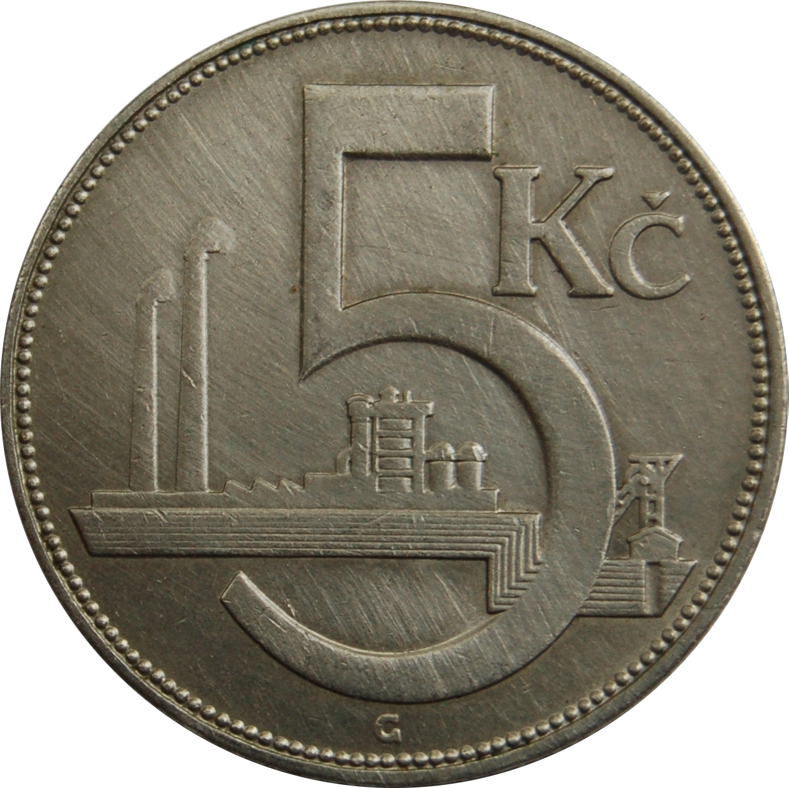
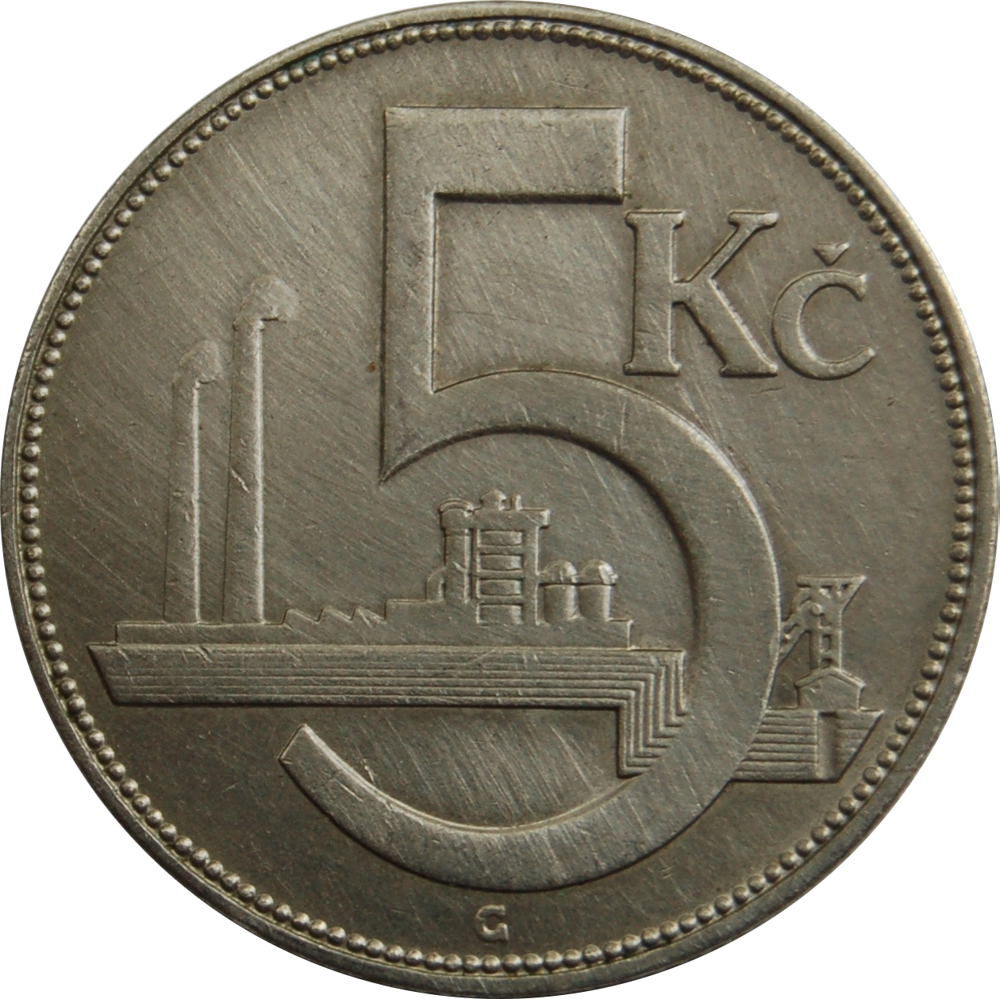

Kvantové počítače
lehký úvod do problematiky
Miroslav Bajtoš
Lead Node.js Engineer @ IBM

Image courtesy of IBM Research [CC BY-ND 2.0]
A
01000001
 

superpozice
(superposition)
provázanost
(entanglement)
Chinese satellite beats distance record for
quantum entanglement
[newscientist.com, 2017-06-15]
Now, entanglement has been preserved in pairs of photons sent by the Chinese satellite Micius to ground stations separated by 1203 kilometres — a new record.
Kvantové algoritmy
vyhledávaní: Grover
faktorizace: Shor
(a mnoho dalších)
Dekohese
(quantum decoherence)
Image courtesy of IBM Research [CC BY-ND 2.0]
Detekce & oprava chyb
spolehlivý počítač =~ 1 000 - 100 000 qubitů
Současný stav
Hardware
- IBM: 50 quibits
- Intel: 49 qubits
- Google: 72 qubits
Software
- OpenQASM (assembler od IBM)
- QASM Simulator
- Microsoft Q#
- LIQùëàùëñ‚èê‚å™(.NET simulator)
Budoucnost
Nové kvantové algoritmy
(odolnější vůči chybám HW)
Rychlejší řešení pro
těžké problémy
simulace přírody/chemie
strojové učení
Koexistence s klasickými počítači
FPU, GPU, QPU
Dobrodružství na několik dekád
to samé říkají už posledních 20-30 let ;-)
Vyzkoušejte si!
IBM Q Experience
16 qubitů naživo v Cloudu
Hello Quantum
Sada hlavolamů v mobilní aplikaci
Microsoft Q#
Simulace 30 qubitů lokálně
Quantum Katas
Naučte se Q# a základy kvantových počítačů

Image courtesy of Abhijay Achatz [CC BY-SA 2.0] https://www.flickr.com/photos/frattel/8558044789
Děkuji!
slajdy: bajtos.net/Q